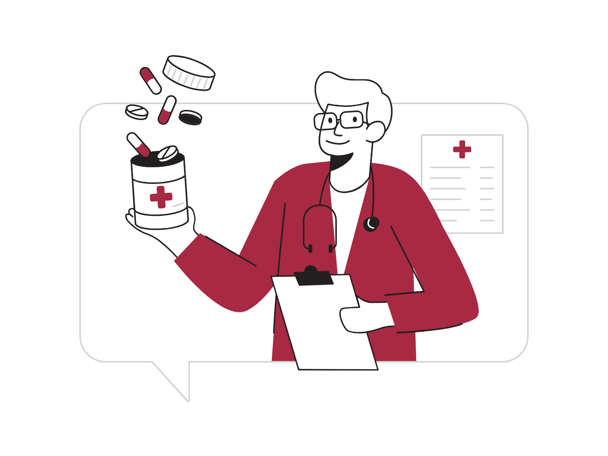

Overview
As our world becomes more and more digitized, patients and their devices are generating streams
of valuable data that can provide meaningful clinical insights. This digital health revolution
provides great opportunities to design and validate new digital health concepts. Many groups
within Stanford Medicine have promising ideas that are ripe for development, however, they lack
the software engineering and healthcare compliance know-how to take them forward.
Building for Digital Health is a new Biodesign course sponsored by the Stanford School of Medicine (SoM)
and Stanford's Computer Science (CS) department. Its goal is to provide CS students with the
opportunity to apply their skills to real-world health technology development projects, while
enabling SoM faculty to leverage these talented individuals to help advance their technology
concepts toward patients. Both audiences will learn a repeatable approach for developing new
digital health technologies and preparing to launch them in the market.
Over the course of ten weeks, students and faculty will work together to tackle a project and
launch an app-enabled solution for research use. Every week, students will learn about app-development,
sensor technologies, privacy, security, and more. In the final week of class, teams will present
their final project (app) to a panel of digital health experts.
Goals
-
Gain exposure to unmet needs in the healthcare field and learn to design and build
secure digital solutions to address them.
-
Get experience working with technical and multidisciplinary teams with the help of
external mentors and industry experts who can help guide career paths in health tech
innovation.
-
Become familiar with the iOS platform, the Swift programming language,
the use of CardinalKit and other open-source frameworks, and secure
data collection practices.
At a glance
Projects
Students will be able to work on one of four projects for the Winter of 2022.
The participating projects will present their challenges during the first lecture.
Everyone will have an opportunity to submit a form of interest with their preference
during the first day of class. We will then create balanced teams based on this input.
We will announce the participating projects a few weeks before the course starts.
Schedule
Week 1 (1/10 & 1/12)
- Syllabus overview, course website, grading, attendance, and guest lectures.
- Discussion of topics covered, assignments, Health Insurance Portability and Accountability Act (HIPAA) training, and delivers.
- Introducing our projects for this quarter (need statement presentation).
Submit your project preferences!
Assignment #1: Xcode, Swift, and SwiftUI
Week 2 (1/17 & 1/19)
- Data privacy, personally identifiable information (PII), and data-risk assessments (DRA).
- HIPPA-compliance, Institutional Review Board (IRB) protocols, and the consent process.
- What does it mean to develop reusable software?
- Testing & Linting, Code Quality
- How do you develop reusable applications and interfaces?
- Mobile application architectures
Assignment #2: App Requirements and Architecture
Week 3 (1/24 & 1/26)
- CardinalKit architecture and application programming interface (API)
- Use your first CardinalKit modules
- Combining modules to build software components
- How do you develop your own modules?
- How do you create a well-architected mobile application with CardinalKit?
Assignment 3: Prepare your Midterm Presentation
Week 4 (1/31 & 2/2)
- Accessing health record data
- Guest Lecture from Ricky Bloomfield, Apple Health
Learn how to architect a cloud backend for your digital health app
Week 5 (2/7 & 2/9)
Discuss with mentors about app design and presentation.
- Share your plan and software architecture for your application
- Demonstrate the API and design of your first modules
Week 6 (2/14 - 2/16)
- Accessing health and fitness data
- Health management, symptom tracking, and more.
- Guest lecture - TBD
- Support teams with current development challenges.
- Tips & Tricks for SwiftUI
Assignment #4: Application Beta Deployment
Week 7 (2/21 & 02/23)
- Learn how the HL7 FHIR data standard works for interoperability
- Guest lecture - TBD
- Tools for analyzing healthcare data
- Guest lecture - TBD
Week 8 (2/28 & 3/2)
In-class development and feedback.
In-class feedback and development.
Assignment #5: Prepare the Final Presentation and Deployment
Week 9 (3/7 & 3/9)
In-class feedback and development.
Week 10 (3/13 & 3/16)
In-class feedback and development.
Teams will share their final apps!

Student Info
Responsibilities
Attendance
No more than one unexcused absence is permitted. A second absence may be permitted
with written justification by the student and fulfillment of a make-up assignment.
Two or more unexcused absences will lead to a No CR grade.
Amount of Work Expected
Teams can expect up to 7-9 hours of work each week beyond classroom hours.
A majority of the effort is spent researching needs, meeting need coaches and
mentors, interviewing stakeholders, and coding solutions as a team.
Deliverables
Teams will complete a midterm and final presentation, discussing progress and functionality.
The final deliverable will be a research-ready iOS mobile application hosted on GitHub.
Code and IP created is governed by Stanford's standard IP procedures, and will be used to
inform University research.
Trainings and Certifications
Health research requires adherence to strict security and privacy protocols, and Stanford
requires researchers working in this area to obtain specific certifications. Specifically,
a Stanford HIPAA certificate is required, and will be obtained through
/starsexpress.stanford.edu.
This certification will enable students to work on other IRB-approved research, and is a requirement
for most research within the School of Medicine. This training is offered through the STARS
system (use the link above).
Coding and Requirements
Teams will be coding throughout the quarter. We require that you have taken CS106A/B or equivalent.
We highly recommend some experience with mobile platforms (CS193P/A, CS47), OR web platforms (CS142).
Since we are working primarily on iOS, you will need access to a macOS computer running Xcode.
The Macs in residential clusters and at Lathrop come with Xcode pre-installed. You can checkout Macbook
Airs from the Tech Desk for up to 4 weeks through this link. See list of computers on-campus with Xcode
here or here.
Topics Covered
Open Source + the iPhone as a platform for digital health
Learn about what makes the iPhone a powerful platform to develop clinical apps. Overview of
how some open source frameworks leverage iOS to accelerate medical research.
Using GitHub (https://github.com/CS342)
Become familiar with using GitHub to manage software development projects.
Using CardinalKit (https://cardinalkit.stanford.edu)
Developed with the goal of providing a suite of tools to build and accelerate your digital
health experience from the ground up — from an app itself to storing collected data in the cloud.
Using ResearchKit (https://www.apple.com/researchkit/)
Developed with the goal of streamlining the process of gathering robust and meaningful data.
Used to document patient-reported outcomes (surveys) and track a person’s reaction time, balance,
gait, mobility, among many other things.
Using CareKit (https://www.apple.com/carekit/)
Developed with the goal of helping track the development of symptoms and adherence to medication
over a period of time. Often used to help patients manage a particular health condition.
Using HealthKit (https://developer.apple.com/healthkit/)
We will use HealthKit to read health and activity data from the iPhone. This enables providers
to track a patient’s step count, heart rate, flights climbed, calories burned, and other similar
metrics over time. HealthKit also allows us to download electronic health records (EHR) to your
iPhone using the Fast Healthcare Interoperability Resources (FHIR) specification.
Using iPhone Sensors (https://developer.apple.com/documentation/coremotion)
We will use CoreMotion to track accelerometer, gyroscope, and pedometer data in real-time.
Backend for Data Visualization and Analysis on Google Cloud
Introduction to internet-enabled dynamic apps. We will build a web dashboard hosted on Google Cloud
to conceptualize how data can travel from a patient to a provider's hands in real-time. We will explore
how data can be analyzed using BigQuery.
Launching your first health app
We will discuss data privacy and HIPAA compliance in-depth. We will discuss IRB approval for those
interested in clinical-trial applications.
Grading
3 Units – CR/NC or Letter Grade
Students may elect to attend the course for CR/NC or for a Letter Grade.
In addition to attending classes, completing readings, and participating actively in
the classroom environment, students are required to complete a class project exploring
a need in digital mobile health. Projects are chosen in advance from a list of need areas,
sourced by faculty.
Grading will be based on:
-
10% Attendance
-
10% Individual and team class participation; project teams must share presentation responsibilities.
-
30% Assignments
-
20% Midterm Presentation. All team members must be present.
-
30% Final Presentation and Deliverables (10-15 slides).
All team members must be present. The slide deck (powerpoint or pdf) must be submitted in
advance and no later than 2:00 PM on March 16th. Code must be submitted on the last day of
class via GitHub. (The HIPAA training certificate is also part of the final presentation grade!)
Readings
View
Getting Started Swift Language Guide
View
Stanford Biodesign Course Website
Information for Students with Disabilities
Students with Documented Disabilities:
Students who may need academic accommodation based on the impact of a disability must initiate
the request with the Office of Accessible Education (OAE). Professional staff will evaluate the
request with required documentation, recommend reasonable accommodations, and prepare an
Accommodation Letter for faculty dated in the current quarter in which the request is made.
Students should contact the OAE as soon as possible since timely notice is needed to coordinate
accommodations. The OAE is located at 563 Salvatierra Walk
(phone: 723-1066, URL: http://studentaffairs.stanford.edu/oae).
Looking for class content for previous years?
2019
2020
2021